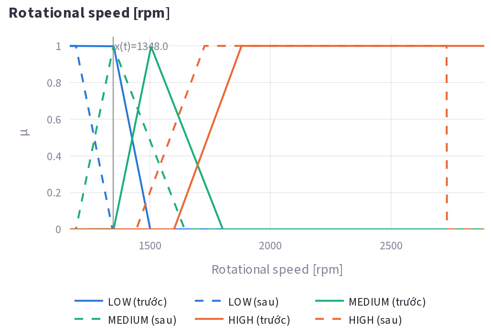
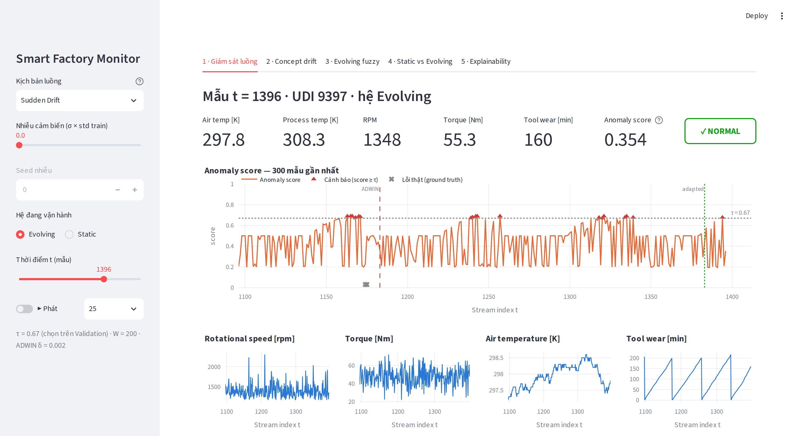
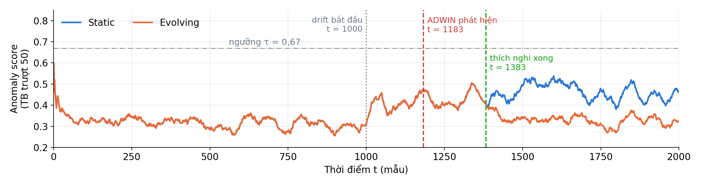

Hệ suy diễn mờ tự nhận ra khi môi trường vận hành đổi khác, tự điều chỉnh tri thức của mình — không cần nhãn, không cần huấn luyện lại, và giải thích được từng cảnh báo.
tỷ lệ báo động giả của mô hình tĩnh sau khi chế độ vận hành thay đổi
2,2% → 10,6% · máy không hề hỏng
Còi kêu liên tục, công nhân quen tay tắt — và bỏ qua luôn cả lần máy hỏng thật.
Chỉ biết máy hỏng sau khi kiểm tra, sửa chữa. Không thể gán nhãn và huấn luyện lại kịp.
Chỉ 3,4% mẫu là hỏng — mỗi cảnh báo giả đều làm xói mòn niềm tin vào hệ thống.
Nhưng nhãn hỏng đến sau vài tuần — trong lúc chờ, hệ thống vẫn báo động sai.
Kỹ sư không biết vì sao nó báo động, nên không dám tin và không sửa được.
“1348 rpm là chậm” đúng ở xưởng cũ, sai ở xưởng mới — luật không tự biết điều đó.
Cần một hệ vừa đọc được như luật chuyên gia, vừa tự thích nghi như máy học.
IF RPM là LOW AND Torque là HIGH AND độ mòn dao là HIGH THEN nguy cơ HIGH
Quan hệ nhân quả vật lý — đúng ở mọi xưởng.
“RPM thấp” ở môi trường mới là bao nhiêu?
Hệ tự đo và dịch khái niệm: chỉ 2 tham số thay đổi.

Nét liền: khái niệm cũ · nét đứt: khái niệm sau khi hệ tự dịch −156 rpm
5 cảm biến → 15 hàm thuộc → 12 luật Mamdani → điểm bất thường cho từng mẫu.
ADWIN theo dõi chính điểm số của hệ: phân phối đổi → “môi trường đã khác”.
Quan sát 200 mẫu mới, dịch hàm thuộc theo độ lệch đo được. Luật giữ nguyên.
Mỗi cảnh báo truy ngược được tới luật nào, mức độ bao nhiêu.
nhãn cần thiết để phát hiện và thích nghi
tham số được cập nhật — không huấn luyện lại
ms xử lý mỗi mẫu — chạy thời gian thực
⚠ ANOMALY — báo giả
✓ NORMAL — chính xác

Dashboard 5 màn hình — mọi con số tính trực tiếp · streamlit run app.py

mẫu để tự phát hiện thay đổi — không dùng nhãn
báo nhầm trên 2.000 mẫu vận hành ổn định
độ dịch hệ tự ước lượng (thực tế −150)
độ dịch Torque tự ước lượng (thực tế +8)
Số báo động giả
báo động giả khi drift đột ngột (−46% với drift tiệm tiến)
F1-score: 0,211 → 0,273
Khi môi trường ổn định, hệ giữ nguyên hành vi — không tự “sáng tạo” gây rủi ro.
Giai đoạn sau thích nghi (616 mẫu)
| Bắt đúng | Báo giả | Bỏ sót | |
|---|---|---|---|
| Hệ tĩnh | 11 | 64 | 4 |
| Tự tiến hóa | 8 | 6 | 7 |
| Không drift | 8 | 6 | 7 |
Hệ tự tiến hóa cho đúng từng con số của hệ gốc chạy trên dữ liệu không bị drift. Hệ tĩnh “bắt nhiều hơn” chỉ vì nó báo động gần như mọi thứ — kèm gấp 10 lần báo giả.
Mọi lần chạy (4 mức nhiễu × 2 kịch bản × 5 seed) đều giảm báo động giả.
σ nhiễu tới 0,3 × độ lệch chuẩn
Mất tới 20% giá trị cảm biến, hệ vẫn giữ lợi thế F1 và giảm khoảng một nửa báo động giả.
điền khuyết chỉ bằng dữ liệu quá khứ
Máy đi sau nhận “độ dịch” từ máy đi trước: thích nghi sớm hơn 200 mẫu, báo giả giảm tới 48%.
mô phỏng đội 3 máy, drift lệch pha
tái lập toàn bộ kết quả trong ~10 giây — kiểm chứng trên 2 hệ điều hành, 2 phiên bản thư viện: python scripts/reproduce_core.py
| Bài ML thông thường | Hệ mờ tự tiến hóa | |
|---|---|---|
| Tri thức | Trọng số, hộp đen | 12 luật IF–THEN kỹ sư đọc và sửa được |
| Khi thế giới đổi | Không biết mình đã lỗi thời | Tự phát hiện, không cần nhãn |
| Cập nhật | Huấn luyện lại, cần dữ liệu có nhãn | Dịch 2 tham số, giữ nguyên tri thức cũ |
| Giải thích | Hiếm khi | Mọi cảnh báo truy về luật và mức độ |
| Vận hành | Dự đoán theo lô | Luồng thời gian thực, < 0,2 ms/mẫu |
Tri thức hệ tự rút ra sau drift
“Máy đang chạy chậm hơn ~156 rpm và tải nặng hơn ~7 Nm so với lúc thiết kế.”
Nguyên lý rút ra
Khi môi trường đổi, cái lỗi thời là định nghĩa khái niệm — không phải quan hệ nhân quả.
báo động giả
khớp hệ không drift
nhãn để thích nghi
luật giải thích được
Cảm ơn thầy và các bạn — mời xem demo trực tiếp.
AI4I 2020 (UCI): 10.000 mẫu, 5 cảm biến, 3,4% hỏng. Loại 5 cột chế độ lỗi khỏi đầu vào để tránh rò rỉ nhãn.
Train 6.000 thiết kế hàm thuộc · Validation 2.000 chọn ngưỡng 0,67 rồi khóa · Test 2.000 làm luồng vận hành.
Mô phỏng thay đổi chế độ vận hành: RPM −150, Torque +8, đột ngột tại t = 1000 hoặc tiệm tiến 800 → 1200. Nhãn giữ nguyên để so sánh công bằng.
Mỗi mẫu được đánh giá bằng tri thức hiện có rồi mới dùng để thích nghi — không nhìn trước tương lai.
| Kịch bản | Mô hình | Bắt đúng | Báo giả | Bỏ sót | Precision | Recall | F1 |
|---|---|---|---|---|---|---|---|
| Không drift | Tĩnh | 13 | 34 | 26 | 0,277 | 0,333 | 0,302 |
| Không drift | Tự tiến hóa | 13 | 34 | 26 | 0,277 | 0,333 | 0,302 |
| Drift đột ngột | Tĩnh | 18 | 114 | 21 | 0,136 | 0,462 | 0,211 |
| Drift đột ngột | Tự tiến hóa | 15 | 56 | 24 | 0,211 | 0,385 | 0,273 |
| Drift tiệm tiến | Tĩnh | 18 | 113 | 21 | 0,137 | 0,462 | 0,212 |
| Drift tiệm tiến | Tự tiến hóa | 14 | 61 | 25 | 0,187 | 0,359 | 0,246 |
Ngưỡng cố định 0,67 · ADWIN δ = 0,002 · buffer 200 mẫu · độ trễ suy diễn 0,07–0,08 ms/mẫu.
Hiện hệ thích nghi trên hai kênh cơ khí RPM và Torque. Bước tiếp: kiểm định từng kênh để tự nhận ra kênh nào đổi, tách khỏi xu hướng nhiệt độ tự nhiên.
Kiểm tra độ lệch có đủ lớn trước khi dịch hàm thuộc — tránh thích nghi khi detector báo nhầm.
Kiểm chứng trên dữ liệu có drift tự nhiên, thêm khoảng tin cậy bootstrap, ngưỡng tự thích nghi và học luật mới từ nhãn phản hồi.